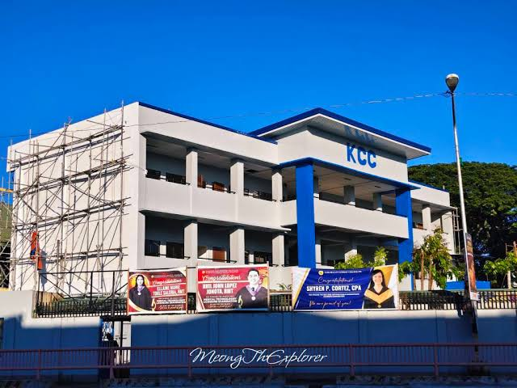
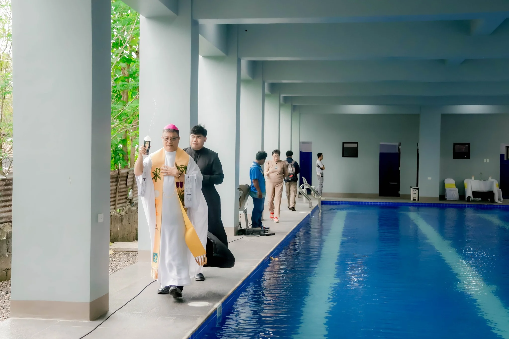

Est. 1927 — Kabankalan City, Negros Occidental
Kabankalan Catholic College, Inc.
Catholic Education: Our Identity, Our Mission
“Teach Ye All Nations” — Matthew 28:19
A Christ-centered learning community committed to academic excellence, faith formation, and service since 1927.

About Us
A Legacy of Faith & Education
Founded in 1927, Kabankalan Catholic College has served as the home of Catholic education in Kabankalan City, Negros Occidental. For close to a century, KCC has shaped graduates who carry with them strong academics, solid values, and a heart for service.
“Teach Ye All Nations”
Learn MoreYear Founded
Programs Offered
Years of Excellence
What We Stand For
The Four Pillars
I — Academic Excellence
Rigorous academics that challenge students to think critically and develop a genuine love for learning.
II — Faith Formation
Deepening faith through Catholic tradition, prayer, and a personal relationship with God.
III — Community Service
Reaching out to those in need, putting the Gospel into practice through hands-on service.
IV — Holistic Development
Shaping students who are not only skilled and knowledgeable but also grounded in strong values.
Academic Programs
Programs Offered
From business and IT to education and criminology, KCC prepares students for the careers they want to pursue.
College of Management, Accountancy and Technology
01
Bachelor of Science in Business Administration
The BSBA program prepares students for careers in business and management. Students develop competencies in financial analysis, marketing strategy, organizational management, and entrepreneurship.
02
Bachelor of Science in Information Technology
The BSIT program develops future-ready IT professionals with skills in software development, networking, database management, and emerging technologies. Students gain hands-on experience in building real-world applications.
03
Bachelor of Science in Accountancy
The BSA program develops competent and ethical accountants prepared for the CPA licensure examination. Students gain expertise in financial accounting, auditing, taxation, and management advisory services.
04
Bachelor of Science in Accounting Information System
The BSAIS program integrates accounting knowledge with information technology skills. Students learn to design, implement, and manage accounting information systems for modern business environments.
05
Bachelor of Science in Management Accounting
The BSMA program focuses on strategic financial management and decision-making. Students develop skills in cost analysis, budgeting, performance evaluation, and strategic planning for organizations.
06
Bachelor of Science in Tourism Management
The BSTM program prepares students for careers in the dynamic tourism and hospitality industry. Students learn tourism planning, event management, and sustainable tourism development.
College of Education, Arts and Sciences
01
Bachelor of Elementary Education
The BEEd program prepares dedicated and competent educators for elementary education with strong pedagogical foundations and content knowledge for teaching young learners.
02
Bachelor of Secondary Education
The BSEd program trains future secondary school teachers with specializations in various fields. Graduates are equipped with advanced subject knowledge and teaching methodologies.
03
Bachelor of Early Childhood Education
The BECEd program prepares educators specializing in early childhood development and education. Students learn to nurture curiosity, confidence, and a love for learning in young children.
04
Bachelor of Physical Education
The BPEd program develops competent physical education teachers and sports professionals with knowledge in exercise science, sports coaching, and health-related fitness.
05
Bachelor of Arts in Philosophy
The AB Philosophy program develops critical thinking, analytical reasoning, and ethical reflection through questions about existence, knowledge, values, and the human condition.
06
Bachelor of Science in Psychology
The BS Psychology program provides a comprehensive understanding of human behavior, mental processes, and psychological well-being. Students develop skills in counseling, assessment, and research.
College of Criminology
01
Bachelor of Science in Criminology
The BS Criminology program trains future law enforcement professionals with a strong foundation in criminal justice, forensic science, and law enforcement administration.
Explore All Levels
Education for Every Stage
Tertiary — College Programs
Degree programs in Business, IT, Accountancy, Education, and Criminology.
Explore ProgramsGrades 11–12 — Senior High School
Academic Track (STEM, ABM, HUMSS, GAS) and TVL Track strands.
View SHS TracksK to Grade 10 — Basic Education
Elementary and Junior High School departments with strong Catholic foundations.
Learn MoreLatest Updates
News & Announcements
What’s new at KCC — announcements, events, and stories from our community.
Community · December 2024
KCC Community Outreach: Christmas Gift-Giving and Feeding Program
KCC students and faculty organized a Christmas community outreach program, sharing blessings with less fortunate families in Kabankalan City.
Read moreAnnouncement · December 2024
KCC Announces Expanded Programs for College Department
Kabankalan Catholic College is excited to announce expanded course offerings in the College Department to meet the growing demand for quality higher education.
Read moreEvent · January 2025
College Department Holds Intramurals and College Week
The KCC College Department organized its annual College Week featuring intramural games, academic contests, and cultural activities.
Read moreCampus Life
Life at KCC
Campus life at KCC goes beyond the classroom — friendships are made, faith is strengthened, and memories are built.
Academic Events — 2 Albums

Academic Events
CMAT Pinning 2025
The Rite of Pinning for the College of Management, Accountancy, and Technology marks a significant milestone in our students’ academic journey. This ceremony honors their dedication, perseverance, and readiness to embrace their roles as future professionals and leaders.

Academic Events
Criminology Reception Rites
Built through discipline, courage, and brotherhood. KCC Criminology Class Makisig undergoes their Reception Rites — a test of strength, resilience, and commitment to the path of future public servants.